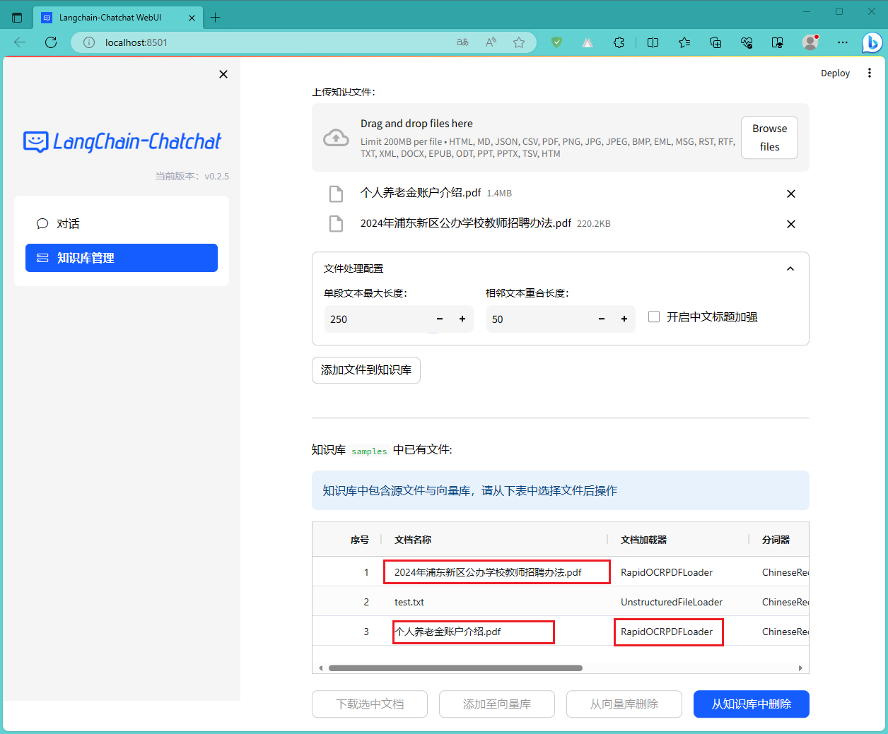

Langchain-Chatchat
如果说部署
这里不得不提一下：
前期准备
本笔记是ChatGLM2-6B - xiaodu114.github.io的后续，还是先根据这篇准备好环境吧！机器必须还是我的老朋友。
好戏开场了
下载LLM 模型
上篇已经下载。对，这里使用的还是量化版：chatglm2-6b-int4
下载Embedding 模型
虽然这只是一扇窗，但是咱还得在说一下： 互链高科
这里将下载的Embedding 模型

下载仓库
这里将下载的仓库放到

说明：这里的仓库是今天（2023-10-17）在GitHub获取的。
创建配置文件
项目的配置在根目录的
修改配置文件
model_config.py 文件
这里就是对LLM 模型、Embedding 模型等配置的地方了，具体修改了哪些，你可以看下面的截图：
# 示例：LLM模型的绝对路径
# model_config.py
# MODEL_ROOT_PATH 字符串变量
# MODEL_PATH 字典变量
# LLM_MODEL 字符串变量 默认使用哪个模型
MODEL_ROOT_PATH + MODEL_PATH["llm_model"][LLM_MODEL]
server_config.py 文件
跑通之后发现，该项目有很多API的调用，启动了好几个服务器……这里应该是关于Web服务器的配置，修改如下图：
虚拟环境
# 创建虚拟环境
python -m venv venv
# 激活虚拟环境
.\venv\scripts\activate
安装依赖
# 我这里设置全局的清华镜像源
pip install -r requirements.txt
# 如果你不想全局设置，也可以仅本次安装时使用镜像源（如下面的截图）
pip install -r requirements.txt -i https://pypi.tuna.tsinghua.edu.cn/simple

知识库初始化
因为我们这是第一次部署，可以直接初始化知识库。其他的可以看官方文档。
# 初始化或重建知识库
python init_database.py --recreate-vs
你可能发现了，这里还有对拥抱脸
跑起来
# 一键启动脚本 startup.py，一键启动所有 FastChat 服务、API 服务、WebUI 服务
python startup.py -a

不出意外，还是出意外了，出现了一大推错误，并没有看到想看到的WebUI页面。这个问题，弄了好几天，试了N种方式，最后发现是
# 查看被占用端口对应的 PID
netstat -aon|findstr 20001
# 查看指定 PID 的进程
tasklist|findstr 7836

郁闷的是这进程还干不掉（内部问题，具体的原因就不和大家说了啊）。于是我只能修改代码了，文件为
# fastchat controller server
FSCHAT_CONTROLLER = {
"host": DEFAULT_BIND_HOST,
"port": 30001,
"dispatch_method": "shortest_queue",
}
修改完之后继续一键启动，需要耐心等待。没想到啊！就这么一点一点的成功了。这你妹的绝对不按套路出牌啊！这时你就问了：怎么成功了，怎么还这样说啊？曰：“客官，你听我细细道来。前几天也跑通了，但是可不是就这么简简单单的，那真是废了九牛二虎之力啊！前几次的一键启动失败，我认为可能是CPU太弱，内存太小，多进程或者什么原因之类，我就将 startup.py 拷贝了五份，当然我修改其中的代码了啊！每一个文件只启动一个服务，最后开五个命令行依次执行这五个文件。你还别说，利用这种方式还真的跑通了。但是今天写部署文档时想着在重新来一遍，结果你也看到了……”。都是泪啊！
不行这里必须得记录一下
下面已修改其中一个文件为例，其他的类似，如下图：


LLM 直接对话正常。下面测试一下知识库，在网上找了两个2023年的PDF，看一下成功添加的截图：

再来试一下：知识库问答。请她帮忙分析一下，结果如下图：
看着界面效果，确实是针对本地文件的回答，但是好像没有回答完？确实是这样的，命令行显示超时了。如下图：
针对上面的超时问题，我在

快速启动
Windows 环境
这里使用
# 进入Python项目目录
$projectPath = "E:\llm\Langchain-Chatchat-master"
Set-Location -Path $projectPath
# 激活虚拟环境
$venvPath = ".\venv\Scripts\Activate.ps1"
if (Test-Path $venvPath) {
& $venvPath
} else {
Write-Host "Python Virtual environment not found."
}
# 执行Python脚本
$pythonScript = ".\startup.py"
if (Test-Path $pythonScript) {
python $pythonScript -a
} else {
Write-Host "Python script not found."
}
Read-Host | Out-Null
关于执行脚本策略和默认执行程序你可以参考：PowerShell - xiaodu114.github.io
Ubuntu 环境
这里使用
#!/bin/bash
# 打开一个新的终端，并在指定目录进入虚拟环境venv
gnome-terminal --working-directory=/home/xxx/llm/2-code/Langchain-Chatchat-master -- /bin/bash -c 'source ./venv/bin/activate; python startup.py -a'
exit
如果这个脚本文件你是在Windows下创建编辑的，一定要注意换行符 Windows(CR LF)和 Unix(LF)。如果使用的是Windows(CR LF)，那么在 Ubuntu 下执行时会报错。参考：$'\r': 未找到命令的解决办法 - 菜鸟辉哥 - 博客园
右键“*.sh”文件->属性->“权限”页签->勾中“允许执行文件”
右键“*.sh”文件->作为程序运行即可
源码
保存拆分之后的文档
你有这样的需求吗？我们想看一下他拆分之后的文档怎样的……于是写了两个扩展方法：添加和删除
修改的文件为：
下面是新增的两个方法：
# 保存拆分后的内容
def extend_add_split_docs_to_file(self, kb_file: KnowledgeFile, docs: List[Document] = []):
print("-"*50 +" ddz extend_add_split_docs_to_file " +"-"*50)
# self.kb_name : 知识库名称 ，例如：ddz002
# self.kb_info : 知识库知识库介绍 ，例如：关于ddz002的知识库
# self.kb_path : 知识库绝对路径 ，例如：D:\2-code\Langchain-Chatchat-0.2.6\knowledge_base\ddz002
# self.doc_path : 知识库文档绝对路径 ，例如：D:\2-code\Langchain-Chatchat-0.2.6\knowledge_base\ddz002\content
if(kb_file is None or kb_file.filepath is None): return
if(docs is None or len(docs) == 0): return
fileName = os.path.basename(kb_file.filepath)
split_docs_folder_name = "split_docs_content"
split_docs_path = os.path.join(self.kb_path, split_docs_folder_name)
if not os.path.exists(split_docs_path):
os.makedirs(split_docs_path)
with open(os.path.join(split_docs_path, fileName + ".txt"), "a", encoding="utf-8") as file:
counter = 0
for doc in docs:
counter = counter + 1
file.write("-"*10 + ">【程序添加】 第 " + str(counter) + " 块 【程序添加】<" + "-"*10+"\n")
file.write(doc.page_content)
file.write("\n")
print("-"*50 +" ddz extend_add_split_docs_to_file " +"-"*50)
return
# 删除
def extend_delele_split_docs_file(self, kb_file: KnowledgeFile, delete_content: bool = False):
print("-"*50 +" ddz extend_delele_split_docs_file " +"-"*50)
# self.kb_name : 知识库名称 ，例如：ddz002
# self.kb_info : 知识库知识库介绍 ，例如：关于ddz002的知识库
# self.kb_path : 知识库绝对路径 ，例如：D:\2-code\Langchain-Chatchat-0.2.6\knowledge_base\ddz002
# self.doc_path : 知识库文档绝对路径 ，例如：D:\2-code\Langchain-Chatchat-0.2.6\knowledge_base\ddz002\content
if(kb_file is None or kb_file.filepath is None): return
fileName = os.path.basename(kb_file.filepath)
split_docs_folder_name = "split_docs_content"
split_docs_path = os.path.join(self.kb_path, split_docs_folder_name)
filePath = os.path.join(split_docs_path, fileName + ".txt")
if delete_content and os.path.exists(filePath):
os.remove(filePath)
print("-"*50 +" ddz extend_delele_split_docs_file " +"-"*50)
return
调用两个新增的方法：
# 添加时调用 extend_add_split_docs_to_file
def add_doc(self, kb_file: KnowledgeFile, docs: List[Document] = [], **kwargs):
"""
向知识库添加文件
如果指定了docs，则不再将文本向量化，并将数据库对应条目标为custom_docs=True
"""
if docs:
custom_docs = True
for doc in docs:
doc.metadata.setdefault("source", kb_file.filepath)
else:
docs = kb_file.file2text()
custom_docs = False
if docs:
self.delete_doc(kb_file)
doc_infos = self.do_add_doc(docs, **kwargs)
# ddz 添加
self.extend_add_split_docs_to_file(kb_file, docs)
status = add_file_to_db(kb_file,
custom_docs=custom_docs,
docs_count=len(docs),
doc_infos=doc_infos)
else:
status = False
return status
# 删除时同步删除
def delete_doc(self, kb_file: KnowledgeFile, delete_content: bool = False, **kwargs):
"""
从知识库删除文件
"""
self.do_delete_doc(kb_file, **kwargs)
status = delete_file_from_db(kb_file)
if delete_content and os.path.exists(kb_file.filepath):
os.remove(kb_file.filepath)
self.extend_delele_split_docs_file(kb_file,delete_content)
return status
添加HTTPS支持
WebUI采用的
虽然不建议，又没说不行，还是试了一下，这里修改的文件是项目根目录下的
# https相关证书文件了解的不太多，这里测试的是下面的两种类型
def run_webui(started_event: mp.Event = None):
from server.utils import set_httpx_config
set_httpx_config()
host = WEBUI_SERVER["host"]
port = WEBUI_SERVER["port"]
p = subprocess.Popen(["streamlit", "run", "webui.py",
"--server.address", host,
"--server.port", str(port),
"--server.sslCertFile", "C:/*.crt", # HTTPS 看这里
"--server.sslKeyFile", "C:/*.key", # 请您再看一眼
"--theme.base", "light",
"--theme.primaryColor", "#165dff",
"--theme.secondaryBackgroundColor", "#f5f5f5",
"--theme.textColor", "#000000",
])
started_event.set()
p.wait()